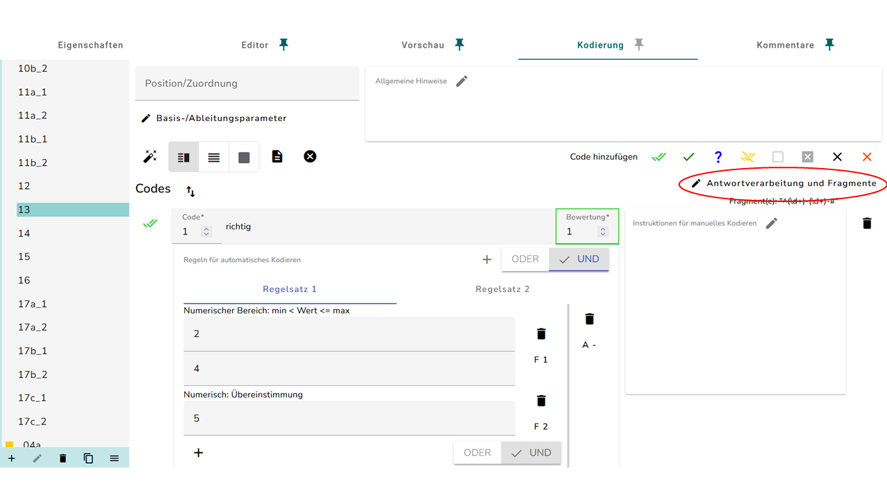
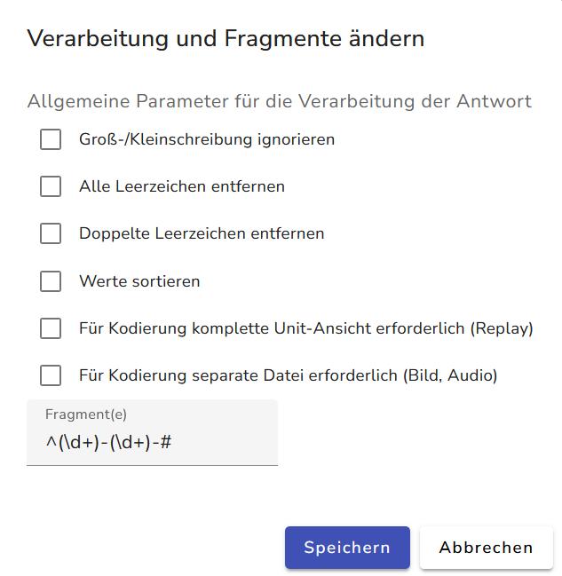
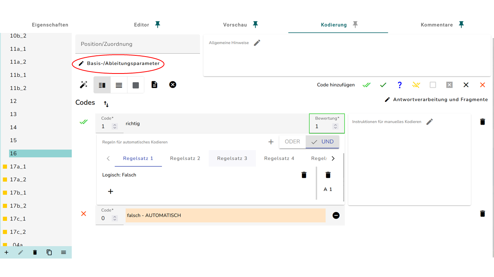
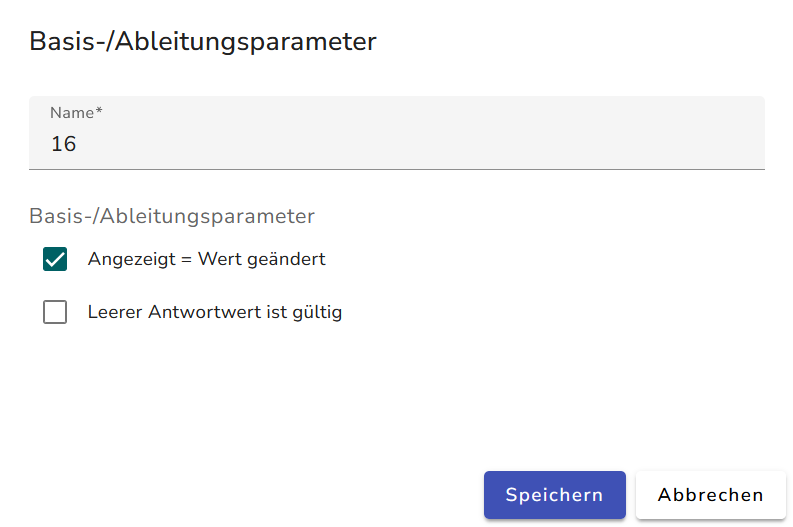
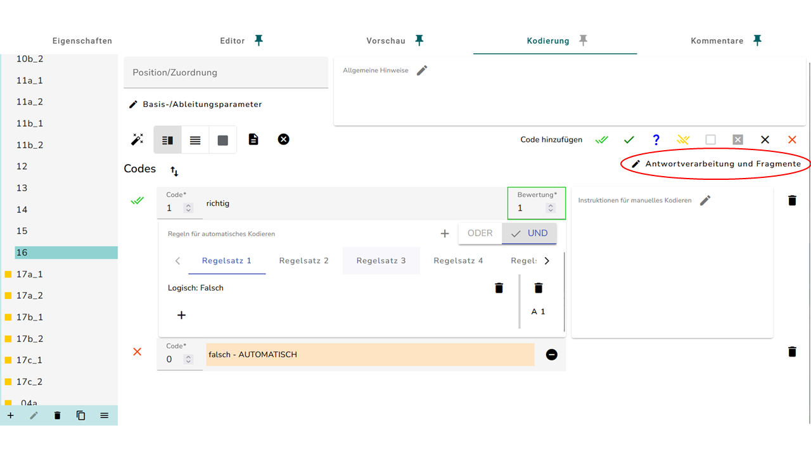
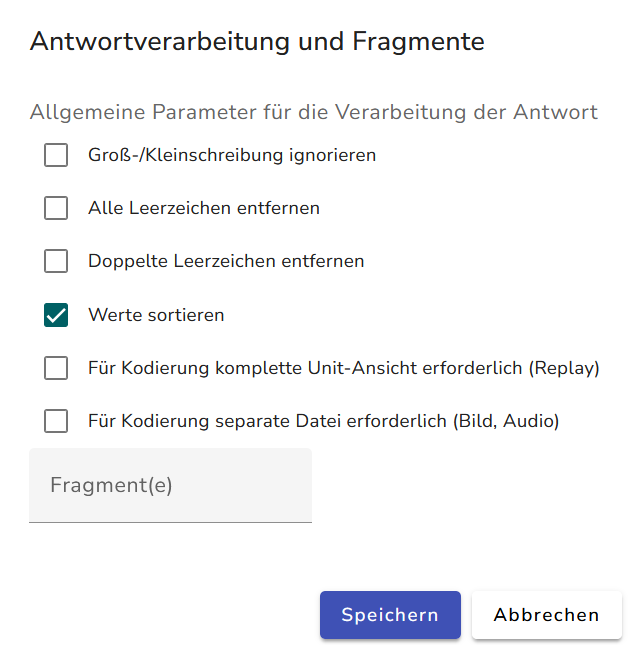

Kodierung Sonderfälle
Die Kodierfälle auf dieser Seite beschreiben besondere Itemformate oder komplziertere Abhängigkeiten mehrerer Variablen voneinander. Für die Definition ist viel Erfahrung und ein tieferes Verständnis der Prozesse während der Kodierläufe erforderlich.
Mehrere Antwortfelder
Hier handelt es sich um Items, indem Schüler*innen zwei oder mehr Antworten aus mehreren Antworten angeben müssen. Es werden also nicht alle richtigen Antworten abgefragt, sondern eine Auswahl.
{kind=link}
Die Kodierung dieser Formate wird wie folgt angelegt:
- Zunächst muss für jede Möglichkeit ein Richtig-Code angelegt werden. Dafür klinkt man auf den grünen Haken. Dann muss mit dem Plus-Symbol die Regel “Zeichen/Text: Übereinstimmung” hinzugefügt werden.

- Jetzt muss jede Möglichkeit in einen einzelnen Richtig-Code in das Feld eingetragen werden. Hierbei müssen die einzelnen Codes 11, 12, 13, usw. benannt werden.
- Zum Schluss muss ein “Falsch: Absichtlich unvollständig”-Code hinzugefügt werden.
{kind=link}
- Wenn das für eine ID gemacht wurde, kann ihre Kodierung auf die IDs der restlichen Textfelder kopiert werden.
- Nun muss eine abgeleitete Variable angelegt werden. Hierbei muss die Ableitungsmethode “Codes aneinanderhängen” ausgewählt werden. Außerdem muss ein Haken bei “Sortiere Werte” gesetzt werden.
{kind=link}
- Jetzt ist ein Richtig-Code (Doppelter grüner Haken) anzulegen, wobei alle möglichen Kombinationen an Antworten in Form von einer Aneinanderreihung ihrer Codes, z.B. 11_12_13 bei drei Antwortfeldern, untereinander ausgelistet werden. Hierbei ist die Reihenfolge nicht zu beachten. Es gilt also z.B. 11_12_13 = 13_12_11.
- Als letztes muss ein Falsch-Code mit einem schwarzen Kreuz angelegt werden.
Drag und Drop mit leerem Feld
Hier sind Drag und Drop-Items gemeint, bei denen auch leere Zeilen akzeptiert werden.
- Diese Format wird zum Großteil wie eine normale DnD Aufgabe kodiert.
- Das Ablegefeld, wo kein Plätchen abgelegt werden soll, bekommt eine spezielle Kodierung. Es muss ein Richtig-Code mit dem grünen Haken angelegt werden. Jetzt kann man mit dem Plus-Symbol die Regel “Leere Eingabe” ausgewählt werden. Zum Schluss muss dann wie üblich ein Falsch-Code (rotes Kreuz) hinzugefügt werden.
- Die abgeleitete Variable wird wie bei üblichen DnD Aufgaben angelegt.
Drag und Drop: mögliche Reihenfolgen
Hier handelt es sich um Drag und Drop Aufgaben, wobei ein Zeile an Ablegelisten als eine Lösung gewertet wird. Dabei ist aber die Reihenfolge der Zeilen nicht zu beachten.
{kind=link}
- Die IDs der Ablegelisten werden der Zeile entsprechend benannt. Im obigen Beispiel wird in der ersten Zeile das erste Ablegefeld mit
07a_1, das Zweite mit07a_2usw. bezeichnet. In der zweiten Zeile wird das erste Ablegefeld mit07b_1, das Zweite mit07b_2usw. bezeichnet. - Die Drag-Elemente werden entsprechend der normalen DnD Kodierung benannt.
- Bei jeder zu kodierenden ID muss jede mögliche Ablage in einem einzelnen Code mit der Regel “Zeichen/Text: Übereinstimmung” angegeben werden. Dabei ist es egal, welcher Code benutzt wird, solange kein Falsch-Code benutzt wird. Hier wurde der Zu-prüfen-Code (blaues Fragezeichen) verwendet.
{kind=link}
Im Fall, dass hier leere Zeilen akzeptiert werden, muss für jede Variable noch die Möglichkeit “Leere Eingabe” hinzugefügt werden. Dies kann mit dem selben Verfahren wie in Abschnitt 2 gemacht werden.
- Die Codes müssen mit 21, 22, 23, usw. benannt werden.
- Jetzt muss ein “Falsch: Absichtlich unvollständig”-Code (grauer Kasten mit Kreuz) hinzugefügt werden.
- Als nächstes müssen die Variablen
07a_1,07a_2, … ,07b_1, usw. zu Zeilenvariablen abgeleitet werden. Also die Variablen07a_1,07a_2, usw. der ersten Zeile werden zu07aabgeleitet,07b_1,07b_1usw. zu07busw. Hierbei muss die Ableitungsmethode “Codes aneinanderhängen” ausgewählt werden. Es darf kein Haken bei “Sortiere Werte” gesetzt werden. - Jetzt ist ein Richtig-Code mit der Regel “Zeichen/Text: Übereinstimmung” für jede Möglichkeit anzulegen, wobei alle möglichen Kombinationen an Antworten in Form von einer Aneinanderreihung ihrer Codes, z.B. 21_22_23 bei drei Ablagefeldern pro Zeile, angegeben werden. Hierbei ist die Reihenfolge, anders als bei den Antwortfeldern, zu beachten.
Im Fall, dass hier leere Zeilen akzeptiert werden, müssen diese auch als Möglichkeit angegeben werden. Wenn der Code zur leeren Eingabe z.B. 23 heißt, muss bei einer Zeile mit drei Ablagefeldern die Möglichkeit 23_23_23 angegeben werden.
{kind=link}
- Die Codes müssen mit 11, 12, 13, usw. benannt werden.
- Nun muss noch eine weitere abgeleitete Variable angelegt werden, die z.B. die Codes
07a,07b, usw. in eine Variable07verknüpft. Hierbei muss die Ableitungsmethode “Codes aneinanderhängen” ausgewählt werden. Außerdem muss ein Haken bei “Sortiere Werte” gesetzt werden. - Jetzt ist ein Richtig-Code anzulegen, wobei alle möglichen Kombinationen an Zeilen in Form von einer Aneinanderreihung ihrer Codes, z.B. 11_12_13 bei drei Antwortfeldern, untereinander ausgelistet werden. Hierbei ist die Reihenfolge nicht zu beachten. Es gilt also z.B. 11_12_13 = 13_12_11.
- Als letztes muss ein Falsch-Code mit einem roten Kreuz angelegt werden.
MC mit Mehrfachauswahl (Kontrollkästchen)
Die Kontrollkästchen-Funktion kann auch als MC mit Mehrfachauswahl angewandt werden. Hier ist die Kodierung aber etwas anders im Vergleich zu den üblichen MC-Items.
- Jedes Kontrollkästchen bekommt eine einzelne ID, bei Item 8 z.B.
08a,08b, usw. - Im Reiter Kodierung muss jede ID dann mit einem Richtig-Code versehen werden, bei dem entweder die Regel “Logisch: Wahr” oder “Logisch: Falsch” ausgewählt werden muss.
- Wenn das Kästchen ausgewählt werden soll, bekommt der Code die Regel “Logisch: Wahr”.
- Wenn das Kästchen nicht ausgewählt werden soll, bekommt der Code die Regel “Logisch: Falsch”.
{kind=link}
- Zuletzt muss noch eine Abgeleitete Variable mit der Ableitungsmethode “Bewertung summieren” angelegt werden.
- Hier muss man auf den Zauberstab klicken und die Anzahl der Basisvariablen in das Feld “Numerisch: Übereinstimmung” eintragen.
Drag und Drop: mehrere mögliche Kombinationen
Bei diesem Sonderfall handelt es sich um ein Aufgabenformat, welches den Schüler*innen ermöglicht, verschiedene Kombinationen an Elementen in jede Ablageliste zu verschieben, wobei mehrere Elemente in eine Ablageliste gezogen werden können. Dafür werden mehrere Regelsätze und sogenannte “Regular Expressions” verwendet.
Pro Ablagefeld, muss jede mögliche Kombination an Elementen in jeweils einen Richtig-Code eingetragen werden.
- Dazu muss die ID von jedem Element der Kombination in das Feld der Regel “Zeichen/Text: Übereinstimmung” eines eigenen Regelsatz eintragen werden.
- Wenn eine mögliche Kombination in einem Ablagefeld die Elemente
09_1,09_2und09_4wäre, dann bräuchte man in einem Richtig-Code drei Regelsätze mit der jeweiligen Regel “Zeichen/Text: Übereinstimmung”, wo im Feld des ersten Regelsatzes 09_1, im Feld des zweiten 09_2 und im Feld des dritten 09_4. - Man kann auch mehrere Möglichkeiten in einem Regelsatz zusammenfassen. Wenn z.B. sowohl die Kobination
09_3,09_4und09_5also auch09_3,09_4und09_6möglich ist, kann man09_5und09_6mit dem Ausdruck (oder “Regular Expression”) 09_[56] zusammenfassen. Für dieses Feld muss man statt der Regel “Zeichen/Text: Übereinstimmung” die Regel “Zeichen/Text: Übereinstimmung regulärer Ausdruck” anlegen.
- Das heißt, im Feld des ersten Regelsatzes würde 09_3 stehen, im Feld des zweiten 09_4 und im Feld des dritten (also das Feld “Zeichen/Text: Übereinstimmung regulärer Ausdruck”) 09_[56]. Dies deckt beide der oben genannten Optionen ab.
Nachdem alle mögliche Kombinationen für das Ablagefeld eingetragen wurden, muss noch ein Falsch-Code (rotes Kreuz) hinzgefügt werden.
Wenn alle einzelnen Ablagefelder kodiert wurden, muss noch eine Abgeleitete Variable mit der Ableitungsmethode “Bewertung summieren” angelegt werden.
- Hier muss man auf den Zauberstab klicken und die Anzahl der Basisvariablen in das Feld “Numerisch: Übereinstimmung” eintragen.
{kind=link}
{kind=link}
Markieren mit optional richtigen Lösungen
Hier geht es um Markieraufgaben, bei denen Schüler*innen optional noch weitere Bereiche markieren dürfen, welche aber nicht zwangsweise Teil ihrer Lösung sein müssen. Diese können entweder am Anfang oder am Ende des zu markierenden Bereich sein.
- Auch hier ist die zu kodierende ID die des zu markierenden Textes.
- Im Reiter Kodierung muss bei der zu kodierenden ID auf das rechte Stift-Symbol geklickt werden und unter “Fragmente” folgender Text eingetragen werden: ^()-()-#. Dieser ist dazu da, dass die Eingaben, die später im Richtig-Code eingetragen werden, richtig erkannt werden.
 
- Jetzt muss ein Richtig-Code angelegt werden. In diesem müssen zwei Regel für die Kodierung hinzugefügt werden. Die Reihenfolge kommt darauf an, ob der optionale Bereich am Anfang oder am Ende des zu markierenden Bereich anknüpft. Folgende Reihenfolge beschreibt einen Bereich, bei dem der optionale Bereich am Anfang des zu markierenden Bereichs anknüpft.
- Der erste ist “Numerischer Bereich: min < Wert <= max”.
- Der zweite ist “Numerisch: Übereinstimmung”.
- Im Falle, dass der optionale Bereich am Ende des zu markierenden Bereich anknüpft, ist die Reihenfolge umgekehrt.
- Die beiden Regeln müssen mit “UND” verknüpft werden. Dafür muss ganz unten am Richtig-Code “UND” ausgewählt werden. Es kann sein, dass “UND” schon automatisch ausgewählt ist.
{kind=link}
- Jetzt muss bei den Regeln jeweils neben dem Textfeld das “F” angeklickt werden, der Punkt “Spezielles” ausgewählt werden und bei der ersten Regel die Zahl 1 eingetragen werden. Bei der zweiten Regel muss die Zahl 2 eingetragen werden.
{kind=link}
- Im Fall, dass der optionale Bereich am Anfang des zu markierenden Bereich anknüpft, muss im ersten Textfeld die Zahl vor der des ersten optionalen Wortes eingetragen werden. Dabei beginnt die Nummerierung bei 0. Im zweiten Textfeld wird die Zahl des ersten notwendigen Wortes eingetragen. Im dritten Textfeld muss die Zahl des letzten notwendigen Wortes, also das Ende des Bereiches eingetragen werden.
Die Wörter müssen hierfür nicht einzeln durchgezählt werden. Im Reiter Vorschau kann auch der Bereich markiert werden und “Kodierung prüfen” ausgewählt werden, so wie in Abschnitt Markieren beschrieben. Die erste Zahl des angezeigten Code ist die Zahl des ersten Wortes des Bereiches und die zweite Zahl ist die Zahl des letzten Wortes. So kann man die einzutragenden Zahlen auch ablesen.
- Beispiel: Nehmen wir als Beispiel den Text: “Berthas Nachbarin heißt Frau Gertrud Müller.” Hier muss der Name von Berthas Nachbarin markiert werden, wobei sowohl die Lösung “Gertrud Müller” als auch “Frau Gertrud Müller” akzeptiert werden. Dann müsste in dem ersten Feld 2, im zweiten Feld 4 und im dritten Feld 5 eingetragen werden.
{kind=link}
- Im Fall, dass der optionale Bereich am Ende des zu markierenden Bereich anknüpft, muss im ersten Textfeld die Zahl von dem ersten Wort des Bereiches eingetragen werden. Dabei beginnt die Nummerierung wieder bei 0. Im zweiten Textfeld wird die Zahl vor der des letzten notwendigen Wortes eingetragen. Im dritten Textfeld muss die Zahl des letzten optionalen Wortes, also das Ende des optionalen Bereiches eingetragen werden.
- Der Rest der Kodierung kann so wie bei den “normalen” Markieraufgaben gemacht werden. Auch hier ist wichtig, dass am Ende noch ein Regelsatz angelegt wird, der die Anzahl der zu markierenden Bereiche festlegt.
Einfärben
Dieses Aufgabenformat bezieht sich hauptsächlich auf das Einfärben von Bildbereichen. Hier wird auch mit Regelsätzen gearbeitet. Die Bildbereiche bekommen hier gemeinsam eine ID. Hier gibt es zwei Varianten: die Reihenfolge der Einfärbungen ist entweder in der Kodierung zu beachten oder nicht.
Variante 1: Reihenfolge ist wichtig
- Zunächst muss ein Richtig-Code hinzugefügt werden.
- Hier müssen so viele Regelsätze hinzugefügt werden, bis die Anzahl der der Bildbereiche entspricht. Bei 12 Bildbereichen werden also 12 Regelsätze gebraucht. Dabei entspricht der erste Regelsatz dem von links ersten Bildbereich, der zweite entspricht dem zweiten Bildbereich, usw.
- Bei jedem Regelsatz muss jetzt entweder die Regel “Logisch: Wahr” oder “Logisch: Falsch” ausgewählt werden.
- Wenn der entsprechende Bildbereich eingefärbt werden soll, dann muss “Logisch: Wahr” ausgewählt werden.
- Wenn der entsprechende Bildbereich nicht eingefärbt werden soll, dann muss “Logisch: Falsch” ausgewählt werden.
- Die Regelsätze müssen auch noch durchnummeriert werden. Dazu muss jeweils auf das “A” links neben der Regel geklickt werden, “Spezielles” ausgewählt werden, und im Feld die Zahl des Regelsatzes eingetragen werden.
{kind=link}
- Zum Schluss muss noch ein Falsch-Code hinzugefügt werden.
Variante 2: Reihenfolge ist nicht wichtig
Die Kodierung dieser Variante ist fast identisch zu der Kodierung der erste Variante. Es müssen zusätzlich aber zwei Haken gesetzt werden.
- Man muss zunächst auf das Stift-Symbol unter dem Feld “Position/Zuordnung” klicken und den Haken bei “Angezeigt = Wert geändert” setzen.
 
- Dann man auf das Stift-Symbol ganz rechts geklickt werden und “Werte sortieren” ausgewählt werden.
 
Es ist wichtig, das beim Anlegen der Regeln für die Regelsätze erst alle “Logisch: Falsch”-Regeln und dann alle “Logisch: Wahr”-Regeln angelegt werden. Dabei ist zu beachten, dass die Anzahl der Regelsätze mit “Logisch: Wahr” der Anzahl der einzufärbenden Bildbereiche entspricht. Analog ist es wichtig, dass die Anzahl der Regelsätze mit “Logisch: Falsch” der Anzahl der nicht einzufärbenden Bildbereiche entspricht.
Auch hier müssen die Regelsätze durchnummeriert werden. Dazu muss jeweils auf das “A” links neben der Regel geklickt werden, “Spezielles” ausgewählt werden, und im Feld die Zahl des Regelsatzes eingetragen werden.
Kombination Drag und Drop und Kurzantwort
Hier geht es um Aufgaben, die die Aufgabenformate Drag und Drop und Kurzantwort kombinieren. Im speziellen wird hier die Kodierung von Aufgaben behandelt, wo die Schüler*innen Drag-Elemente einer Katergorie in ein Ablagefeld ziehen und diese Kategorie als Kurzantwort benennen sollen. Insbesondere wird hier der Fall beschrieben, in dem die Reihenfolge der Kategorien beliebig sein kann.
- Die Benennung der Item-IDs weicht von der Benennung in den üblichen Fällen ab. Die Ablegeliste und das zugehörende Eingabefeld werden einander zugeordnet. Bei Item 10 wird z.B, das erste Ablagefeld
10a_1benannt und das erste Eingabefeld10a_2. Das zweite Ablagefeld wird10b_1benannt, das zweite Ablagefeld10b_2usw. - Im Reiter Kodierung müssen dann bei der ID des ersten Ablagefeldes so viele Richtig-Codes hinzufügen werden, wie Kategorien erkannt werden sollen.
- In den Richtig-Codes müssen alle möglichen richtigen Kombinationen an Drag und Drop Elementen eingetragen werden, wobei pro Richtig-Code eine Möglichkeit eingtragen wird.
- Jedes Element einer möglichen Kombination muss in sein eigenes Regel-Feld mit der Regel “Zeichen/Text: Übereinstimmung” eingetragen werden. Wenn eine richtige Möglichkeit z.B.
10_1und10_4ist, dann sieht die Kodierung für diese Möglichkeit wie folgt aus:
{kind=link}
- Wenn alle Möglichkeiten eingetragen wurden, dann muss ein “Falsch: Absichtlich unvollständig”-Code (grauer Kasten mit Kreuz) hinzugefügt werden. Danach kann die Kodierung auf die IDs der restlichen Ablagefeldern kopiert werden.
- Um die Eingabefelder zu kodieren, müssen bei der ID des ersten Eingabefeldes ebenfalls so viele Richtig-Codes hinzufügen werden, wie Kategorien erkannt werden sollen.
- In jedem Richtig-Code muss die Regel “Zeichen/Text: Übereinstimmung” hinzugefügt werden und in das jeweilige Feld eine der richtigen Kategorien eingetragen werden. Hierbei muss darauf geachtet werden, dass alle richtigen Lösungen abgefangen werden. Wie man das macht, kann in Abschnitt Kurzantwort nachgeschlagen werden.
- Wenn alle Kategorien eingetragen wurden, muss ein Falsch-Code (rotes Kreuz) gesetzt werden und die Kodierung kann auf die IDs der restlichen Eingabefeldern kopiert werden.
- Jetzt muss für jede Zeile (also jeweils ein Ablagefeld und das zugehörige Eingabefeld) eine abgeleitete Variable mit der Ableitungsmethode “Codes aneinanderhängen” angelegt werden. Hier müssen bei z.B. Item 10 die Basisvariblen
10a_1und10a_2zu10aabgeleitet werden. - Hier muss ein Richtig-Code angelegt werden, in dem die Regel “Zeichen/Text: Übereinstimmung” hinzugefügt wird.
- In dem Feld werden die zueinandergehörigen Codes von den Basisvarialen im Schema Code1_Code2 aneinandergehängt, und untereinander ausgelistet. Dies bedeutet, dass der Code einer Möglichkeit des Drag und Drop-Items an den Code der dazugehörigen Kategorie gehängt wird.
- Wenn also Code 11 von der Kodierung der Ablageliste zu Code 11 von der Kodierung des Eingabefeldes gehört, dann muss hier 11_11 angegeben werden.
{kind=link}
- Als Letztes müssen die vorher abgeleiteten Variblen zu einer weiteren abgeleiteten Variable mit der Ableitungsmethode “Bewertung summieren” zusammengefasst werden. Diese bekommt für Item 10 den Namen
10. - Jetzt muss über den Zauberstab die Anzahl der zuvor abgeleiteten Variablen eingetragen werden.
Ableitungsmethode: Solver
Mit der Ableitungsmethode Solver lassen sich vor allem Rechenaufgaben kodieren, bei denen die Eingaben der Testperson nicht unmittelbar automatisch kodiert werden können, sondern erst eine Verrechnung der Werte von Basis- und/oder abgeleiteten Variablen erfolgen muss, um die Richtigkeit beurteilen zu können.
- Dazu werden die IDs der Eingabefelder bei z. B. Item
17wie folgt benannt: das erste Eingabefeld der ersten Rechnung wird17a_1genannt, das zweite17a_2, usw. Das erste Eingabefeld der zweiten Rechnung wird17b_1, das zweite17b_2, usw. Dieses Verfahren wird für alle Rechnungen wiederholt. - Bei der Kodierung jeder Basisvariable muss nur ein “Falsch: Absichtlich unvollständig”-Code (grauer Kasten mit Kreuz) hinzugefügt werden.
{kind=link}
- Als nächstes wird jede Zeile zu je einer abgeleiteten Variable verknüpft, d.h. bei Item 17 werden zunächst
17a_1,17a_2, usw. zu17aabgeleitet, dann17b_1,17b_2usw. zu17busw.- Als Ableitungsmethode muss “Mathematischer Ausdruck (Solver)” ausgewählt werden. Unter “Ausdruck für Solver” wird für eine Multiplikation von zwei Werten der Ausdruck:
${Basisvariable1} * ${Basisvariable2}
eingetragen.- In unserem Beispiel wäre der Ausdruck für die erste Rechnung ${17a_1} * ${17a_2}, der Ausdruck für die zweite Rechnung ${17b_1} * ${17b_2}, usw.
- Das
*kann durch eine beliebige andere Rechenoperation ausgetauscht werden, der Syntax der üblichen Operationen sind:+(Addition),-(Subtraction) und/(Division).
- Dann muss man auf den Zauberstab klicken und unter “Numerisch: Übereinstimmung” das erwünschte Resultat eingegeben werden. Wenn also z.B. Multiplikationen, die die Zahl 60 ergeben erwünscht sind, dann ist hier 60 einzutragen.
- Als Ableitungsmethode muss “Mathematischer Ausdruck (Solver)” ausgewählt werden. Unter “Ausdruck für Solver” wird für eine Multiplikation von zwei Werten der Ausdruck:
{kind=link}
- Es müssen zusätzlich noch abgeleitete Variablen hinzugefügt werden, die sicher stellen, dass jede Rechnung nur einmal auftaucht. Dies macht man, indem man alle Basisvariablen einer Spalte zu einer abgeleiteten Variable zusammenfässt, also alle mit 1 am Ende zusammen, dann alle mit 2 usw. Bei Item 17 bekommt die Variable, die alle Basisvariablen der ersten Spalte zusammenfässt die ID
17_1, die Variable, die die Basisvariablen der 2. Spalte zusammenfässt bekommt die ID17_2usw.- Hier wählt man jeweils die Ableitungsmethode “Auf Einzigartigkeit prüfen” und setzt einen Haken bei “In Zahl umwandeln”.
- Man fügt einen Richtig-Code hinzu, der die Regel “Logisch: Wahr” bekommt.
- Zum Schluss muss ein Falsch-Code (rotes Kreuz) angelegt werden.
- Zum Schluss müssen alle angelegten abgeleitete Variablen zu einer Variable abgeleitet werden. Diese wird nach dem Item benannt, also bei Item 17 bekommt sie den Namen
17. Hier wird die Ableitungsmethode “Bewertung summieren” ausgewählt. Dann muss man auf den Zauberstab klicken und unter “Numerisch: Übereinstimmung” die Anzahl der Rechnungen + 2 eintragen (bei drei Rechnungen also 5).